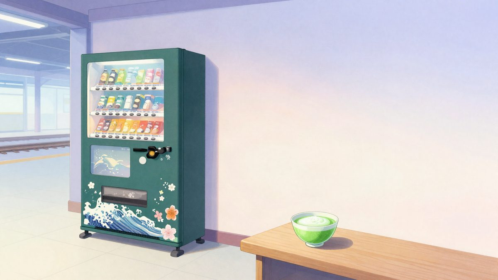
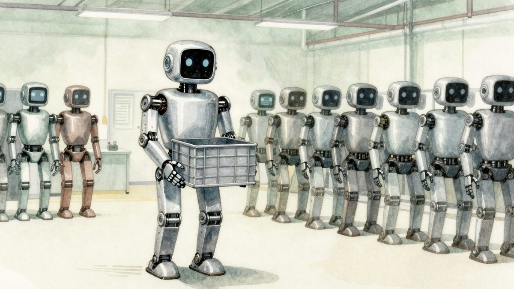
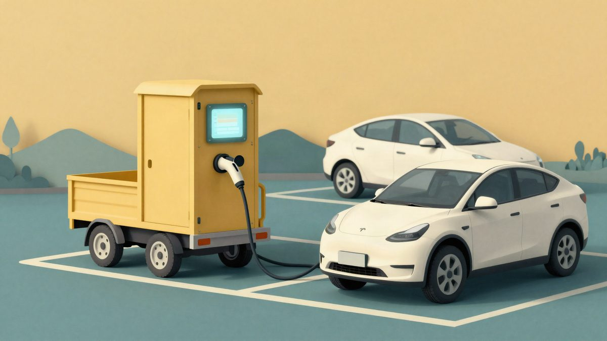

Toyo Vending i Ito En uvode automate koji matchu pripremaju na licu mjesta, u pet jačina

Toyo Vending i Ito En predstavili su automate "Japan Quality Matcha" koji matchu pripremaju po narudžbi, tek nakon pritiska na tipku. Jačinu je moguće birati u pet razina, a uz običnu matchu nudi se i matcha latte. Postavljanje u Japanu počinje ovaj mjesec, a cijena i dostupnost izvan Japana još nisu poznate.
Toyo Vending, poznat po automatima Mill-Ground Coffee, u suradnji s proizvođačem čaja Ito En predstavio je automate za matchu "Japan Quality Matcha". Prema najavi, u Japanu će se početi postavljati ovaj mjesec, a svaka porcija priprema se tek kad kupac pritisne tipku.
Za razliku od klasičnih automata s bocama i limenkama, ovi uređaji piće pripremaju po narudžbi. Toyo Vending i Ito En tvrde da je okus sličan ručno umućenoj matchi. Jačinu možeš birati u pet razina, a uz običnu matchu u ponudi je i matcha latte.
Tehnologija iz automata za kavu
Toyo Vending već ima automate koji za svaku šalicu zasebno melju zrna i kuhaju kavu, a postupak se uživo prikazuje na monitoru. Isti pristup sada koristi za zeleni čaj u prahu, uz posebno odabrane sastojke i prilagođenu tehnologiju pripreme.
Cilj je da matcha bude dostupnija i praktičnija, osobito stranim posjetiteljima, jer potražnja za tim pićem raste.
Tri dizajna i lokacije
Automati dolaze u tri potpuno zelena dizajna inspirirana japanskim krajolikom i tradicijom. Prvi je tamnozelen i, prema opisu proizvođača, treba izazivati osjećaj mira i opuštenosti. Drugi koristi tradicionalne japanske uzorke. Treći, "Modern Luxury", ima veliki zaslon sa slikom matche na pozadini vrhunske plantaže čaja.
Automati će stajati na prometnim točkama: odmorištima uz autoceste, željezničkim kolodvorima, zračnim lukama, u trgovačkim centrima i na turističkim odredištima popularnima među stranim gostima.
Direktor Toyo Vendinga Yoshimasa Wakamatsu rekao je da su s automatima za kavu uvijek nastojali ponuditi beskompromisnu šalicu, a da su sada istu tehnologiju primijenili na matchu, jednu od japanskih tradicionalnih dragocjenosti. Preko poznatog formata automata, kaže, žele ponuditi novi način doživljaja matche, kupcima u Japanu i u inozemstvu.
Izvor: SoraNews24
Povezani članci
 ISHO Ring Pro je pokazao uzrok lošeg sna: u zatvorenoj spavaćoj sobi CO2 prelazi 1000 ppm7. studenoga 2026.
ISHO Ring Pro je pokazao uzrok lošeg sna: u zatvorenoj spavaćoj sobi CO2 prelazi 1000 ppm7. studenoga 2026.
Musk: Tesla Optimus će se najvjerojatnije samo iznajmljivati, a ne prodavati7. studenoga 2026.
Allye iz starih baterija električnih auta gradi punjač od 400 kW koji ne zahtijeva nadogradnju mreže9. studenoga 2026.